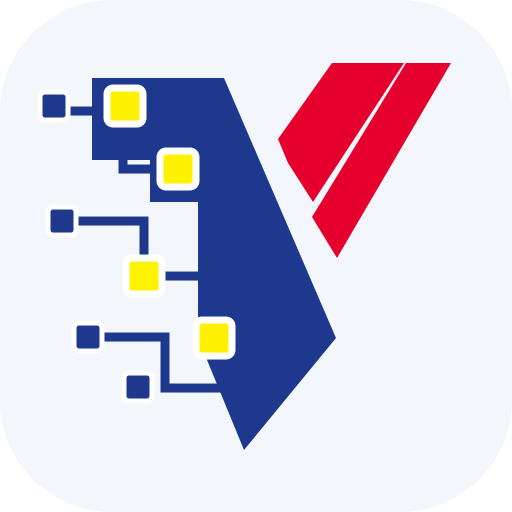
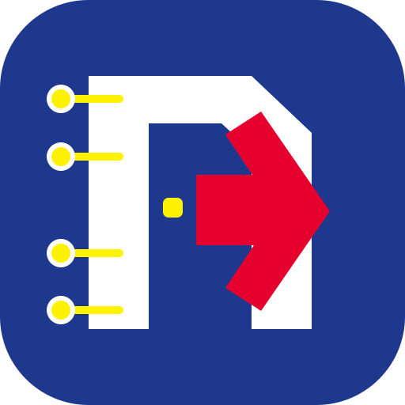
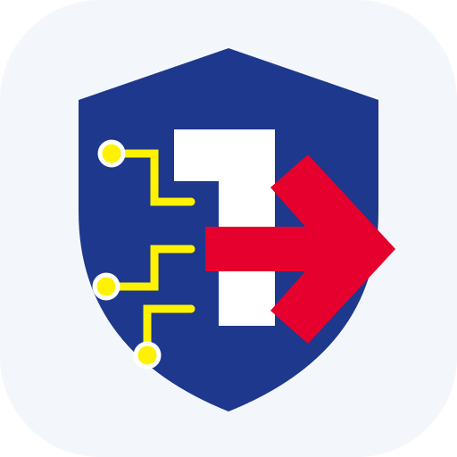
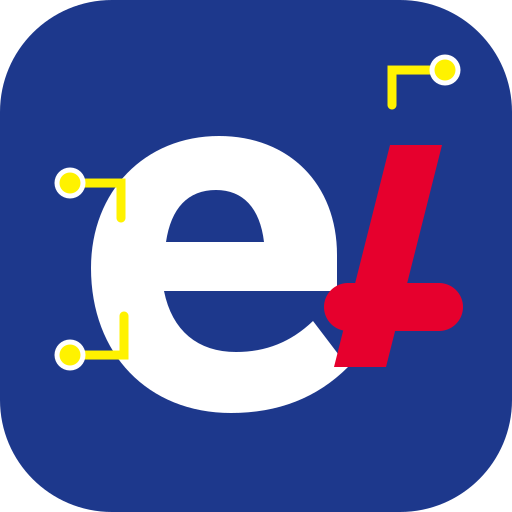

A1 · WARISAN DVS
DVS Pixel Circuit
Siluet rasmi paling mudah dikenali, dengan piksel yang bertukar menjadi nod dan laluan litar.
ITU eAccess
Akses bilik, direkod dengan yakin.
Masuk mudah, rekod teratur.
Log masuk dengan GoogleWarna DVS · motif litar elektronik · ikon PWA tanpa tulisan kecil

Siluet rasmi paling mudah dikenali, dengan piksel yang bertukar menjadi nod dan laluan litar.
Masuk mudah, rekod teratur.
Log masuk dengan Google
Bentuk DVS dipermudah menjadi pintu digital; lebih tegas dan mudah dibaca pada saiz kecil.
Masuk mudah, rekod teratur.
Log masuk dengan Google
Perisai dan pintu terbuka membawa maksud akses selamat tanpa mengubah logo korporat rasmi.
Masuk mudah, rekod teratur.
Log masuk dengan Google
Monogram eA yang paling moden dan app-like, dengan nod litar sebagai tanda sambungan digital.
Masuk mudah, rekod teratur.
Log masuk dengan Google